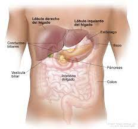

| EL HÍGADO |
| El hígado es el órgano de mayor tamaño dentro del cuerpo. Ayuda al organismo a digerir los alimentos, almacena energía y elimina toxinas. Existen muchos tipos de enfermedades hepáticas: Enfermedades causadas por virus, como la hepatitis A, la hepatitis B y la hepatitis C. |
 |
|  |
Aparte El hígado regula la mayor parte de los niveles químicos de la sangre y excreta un producto llamado bilis, que ayuda a descomponer las grasas y las prepara para su posterior digestión y absorción. |
| Transplante de Hígado |
| El trasplante de hígado o trasplante hepático es el reemplazo de un hígado enfermo por un hígado sano alógrafo. La técnica más comúnmente usada es el trasplante ortotópico, es decir, que el hígado del paciente enfermo es reemplazado por el hígado del donante en la posición anatómica original. |
|